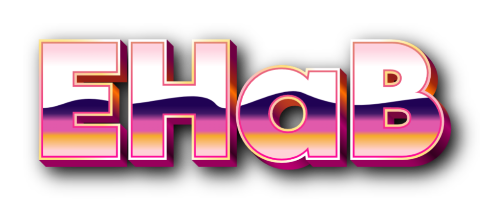

Genomic Repeat Grouping and Orientation IdentifierClick to start analysis
Browser

Pipeline
GReGOrI (Genomic Repeat Grouping & Orientation Identifier) Methods & Exploration Guide
1. SHaNE Concept & Theoretical Framework Theoretical Framework
Under standard Karlin-Altschul alignment statistics over a four-letter nucleotide background, two 1 kb sequences require ~30–35% sequence identity to achieve nominal statistical significance (E-value < 0.05). By contrast, a Strict complementarity Hairpin-like Nested Element (SHaNE) is defined as an operational category of multi-kilobase genomic architectures delimited by discrete islands of high, near-perfect Watson-Crick complementarity.
Nomenclature & Biophysical Context:
The designation—Strict complementarity Hairpin-like Nested Element (SHaNE)—accounts for the architectural organization and physical constraints of multi-kilobase inverted sequences. Strict Complementarity emphasizes rigorous Watson-Crick base-pairing across discrete island stems rather than general sequence similarity. Nested Architecture reflects an organization where outer and inner complementary island stems flank and partition internal unbonded sequence intervals or localized branching hairpins. Structural Realism recognizes that in vivo physiological conformations of multi-kilobase inverted repeats remain subject to chromosomal topology, nucleosome occupancy, and cellular state, describing the sequence-level inverted architecture without presuming an obligate constitutive folded state in chromatin.
Evolutionary Analysis:
Large-scale inverted repeats introduce potential topological instability during DNA replication and transcription. Evaluating the cross-species conservation, syntenic persistence, and sequence divergence of these nested inverted elements across evolutionary lineages provides a framework to examine whether specific architectures are subject to purifying selection.
Primary Literature & Alignment Statistics:
Karlin, S., & Altschul, S. F. (1990). Methods for assessing the statistical significance of molecular sequence features by using general scoring schemes. Proc. Natl. Acad. Sci. USA, 87(6), 2264–2268. DOI: 10.1073/pnas.87.6.2264
Karlin, S., & Altschul, S. F. (1993). Applications and statistics for multiple high-scoring segments in molecular sequences. Proc. Natl. Acad. Sci. USA, 90(12), 5873–5877. DOI: 10.1073/pnas.90.12.5873
Altschul, S. F., Gish, W., Miller, W., Myers, E. W., & Lipman, D. J. (1990). Basic local alignment search tool. Journal of Molecular Biology, 215(3), 403–410. DOI: 10.1016/S0022-2836(05)80360-2
Karlin, S., & Altschul, S. F. (1990). Methods for assessing the statistical significance of molecular sequence features by using general scoring schemes. Proc. Natl. Acad. Sci. USA, 87(6), 2264–2268. DOI: 10.1073/pnas.87.6.2264
Karlin, S., & Altschul, S. F. (1993). Applications and statistics for multiple high-scoring segments in molecular sequences. Proc. Natl. Acad. Sci. USA, 90(12), 5873–5877. DOI: 10.1073/pnas.90.12.5873
Altschul, S. F., Gish, W., Miller, W., Myers, E. W., & Lipman, D. J. (1990). Basic local alignment search tool. Journal of Molecular Biology, 215(3), 403–410. DOI: 10.1016/S0022-2836(05)80360-2
2. Hypothetical Biological Functions Hypothetical / Speculative
While the physical existence of multi-kilobase inverted repeats is verifiable computationally and experimentally, their exact in vivo cellular utilities remain active hypotheses that require direct experimental testing.
Gene Duplication & Functional Innovation (Hypothetical): Multi-kilobase inverted arms frequently encompass entire genes or regulatory cassettes. They provide natural structural substrates for non-allelic homologous recombination (NAHR), initiating gene duplication events, neo-functionalization, and rapid regulatory diversification.
Chromatin Architecture & Heterochromatin-to-Euchromatin Transition (Hypothetical): Under physiological negative supercoiling (σ ≈ -0.06), the spontaneous extrusion of giant cruciform or hairpin loops can alter local topological writhe, displacing canonical nucleosomes and promoting chromatin decondensation—hypothetically converting transcriptionally silent heterochromatin into accessible euchromatin.
Proximal Promoter & Regulatory Topological Hubs (Hypothetical): Inverted arms bring distal regulatory sequences and transcription factor binding sites (TFBS) into spatial proximity at the stem base, potentially functioning as insulator boundaries or super-enhancer scaffolds for proximal flanking genes.
Central Loop Mutational Hotspots (Hypothetical): Unbonded single-stranded DNA (ssDNA) exposed within giant central loops is intrinsically vulnerable to hydrolytic cytosine deamination (C → U), APOBEC/AID cytidine deaminase editing, and transcription-replication conflicts, potentially acting as localized evolutionary mutation generators.
Conceptual References & Chromatin Biophysics:
Sinden, R. R. (1994). DNA Structure and Function. Academic Press. ISBN: 978-0-12-645750-6.
Voineagu, I., Narayanan, V., Lobachev, K. S., & Mirkin, S. M. (2008). Inverted repeats: a source of genomic instability in eukaryotic genomes. Nature Reviews Genetics, 9(10), 738–749. DOI: 10.1038/nrg2438
Sinden, R. R. (1994). DNA Structure and Function. Academic Press. ISBN: 978-0-12-645750-6.
Voineagu, I., Narayanan, V., Lobachev, K. S., & Mirkin, S. M. (2008). Inverted repeats: a source of genomic instability in eukaryotic genomes. Nature Reviews Genetics, 9(10), 738–749. DOI: 10.1038/nrg2438
3. Inverted Repeat Detection & Watson-Crick Duplex Alignment Algorithmic Method
GReGOrI detects candidate SHaNEs using inverted repeat alignment algorithms with dynamic phase-shift void minimization. The maximized Watson-Crick score (S) is defined as:
Score (S) = (Canonical A-T + G-C Watson-Crick Pairings) / Total Duplex Alignment Length
Dynamic voids (.) are phase-shift gap insertions dynamically computed via dynamic programming to optimize interisland duplex complementarity across opposing forward and reverse-complement arms without crossing over.
4. Duplex Nearest-Neighbor Thermodynamics & Melting Temperature (Tm) Peer-Reviewed Literature
Thermodynamic stability of complementary island duplex stems is calculated using unified nearest-neighbor DNA parameters at 37°C in 50 mM monovalent cation concentration ([Na+] = 50 mM), with oligonucleotide concentration CT = 0.2 μM:
ΔG°₃₇ = ΔH° - T · ΔS°
Tm (°C) = 81.5 + 16.6 · log₁₀([Na⁺]) + 0.41 · (%GC) - (500 / Length) - 0.61 · (%mismatch)
Tm (°C) = 81.5 + 16.6 · log₁₀([Na⁺]) + 0.41 · (%GC) - (500 / Length) - 0.61 · (%mismatch)
Primary Literature Citations:
SantaLucia, J. (1998). A unified view of polymer, dumbbell, and oligonucleotide DNA nearest-neighbor thermodynamics. Proc. Natl. Acad. Sci. USA, 95(4), 1460–1465. DOI: 10.1073/pnas.95.4.1460
SantaLucia, J., & Hicks, D. (2004). The thermodynamics of DNA structural motifs. Annu. Rev. Biophys. Biomol. Struct., 33, 415–440. DOI: 10.1146/annurev.biophys.32.110601.141800
Owczarzy, R., You, Y., Moreira, B. G., Manthey, J. A., Huang, L., Behlke, M. A., & Walder, J. A. (2004). Effects of sodium ions on DNA duplex oligomers: Improved predictions of melting temperatures. Biochemistry, 43(12), 3537–3554. DOI: 10.1021/bi034621r
SantaLucia, J. (1998). A unified view of polymer, dumbbell, and oligonucleotide DNA nearest-neighbor thermodynamics. Proc. Natl. Acad. Sci. USA, 95(4), 1460–1465. DOI: 10.1073/pnas.95.4.1460
SantaLucia, J., & Hicks, D. (2004). The thermodynamics of DNA structural motifs. Annu. Rev. Biophys. Biomol. Struct., 33, 415–440. DOI: 10.1146/annurev.biophys.32.110601.141800
Owczarzy, R., You, Y., Moreira, B. G., Manthey, J. A., Huang, L., Behlke, M. A., & Walder, J. A. (2004). Effects of sodium ions on DNA duplex oligomers: Improved predictions of melting temperatures. Biochemistry, 43(12), 3537–3554. DOI: 10.1021/bi034621r
5. Central Loop Analysis & Evolutionary Non-Folding Mathematical Model & Hypothesis
For SHaNEs possessing a central unbonded region between the innermost 5′ and 3′ island stems, GReGOrI evaluates whether sequence composition has evolved under negative selection against ectopic self-folding:
Expected Random Pairing: Prand = 2 · (fA · fT + fG · fC) for nucleotide frequencies fN
Actual Direct Score: Sdir = Direct un-gapped foldover Watson-Crick match %
Actual Optimized Score: Sopt = DP-aligned dynamic void Watson-Crick match %
Actual Direct Score: Sdir = Direct un-gapped foldover Watson-Crick match %
Actual Optimized Score: Sopt = DP-aligned dynamic void Watson-Crick match %
Why Sequences Evolve to Remain Unfolded:
While multi-kilobase inverted repeats possess theoretical potential for secondary structure folding, in vivo chromosomal DNA is constrained by replication, transcription, and chromatin compaction. Unregulated, ectopic intra-loop folding could stall replication forks, impede transcription, or trigger severe topological shear. Consequently, central loop domains often exhibit nucleotide composition that is depleted in self-complementarity (where actual pairing Sopt is significantly below random expectation Prand), having "evolved to remain unfolded"—preserving an open, flexible single-stranded state to prevent aberrant folding under native physiological conditions.
*Quality Control Note: If a central loop contains unsequenced/ambiguous null (N) bases, thermodynamic and self-folding statistical calculations are strictly bypassed to prevent artifactual scoring.
6. Branching Hairpin Topology Classification Algorithmic Method
Internal secondary hairpin branches within interisland intervals or flanking arms are identified by systematic local inverted-repeat search. Structural topologies are classified into unbranched (canonical single-hairpin stem), 3-way, 4-way, and multi-branch junction architectures.
7. Genomic Annotation & Gene-Crossing Genomic Standard
SHaNE genomic coordinates are intersected against NCBI RefSeq and Ensembl structural gene annotations to identify complete and partial overlaps across coding sequences, exons, introns, and untranslated regions (UTRs).
8. Quantile Grouping, Mean (μ), and Standard Deviation (±1σ) Statistical Methods
To accurately visualize metrics that span wide numerical ranges (such as SHaNE size spanning from 500 bp to 80+ kb, score, or GC percentage), GReGOrI applies sample quantile partitioning along with parametric distribution overlays.
Adaptive Quantile Binning: Continuous metrics are partitioned using dynamic sample quantiles (Q0 to Qk), ensuring that sparse and dense regions of the population are grouped equitably without distorting distribution contours or obscuring low-frequency outliers.
Mean (μ) Centerline: The arithmetic mean of the metric distribution is computed across the population and projected as a vertical dashed line with an active value badge at the top of the telemetry chart.
Standard Deviation Zone (±1σ): The empirical standard deviation (σ) is rendered as a distinct semi-transparent zone spanning [μ - σ, μ + σ]. This visually delineates the central 68.2% dispersion of typical elements from extreme structural variants.
9. Parameter Recommendations & Practical Exploration Guide Exploration Guide
Recommended Search Parameters:
We recommend an exploration forward search window of 40 kb and a 99% complementarity score threshold with varying search sampling steps (though 1 kb sampling stepping mines out the vast majority of structures). Our empirical benchmarks across diverse eukaryotic assemblies demonstrate that the most compelling, structurally coherent SHaNEs span within the ~20 kb range and consistently possess core duplex islands of very high Watson-Crick complementarity.
Caveats at Ultra-Long Lookahead Distances (>70–80 kb):
Caution is advised when extending search windows to 70–80+ kb. At these extreme lookaheads, isolated 70 kb-distant matches can occasionally pop out with no other visible intervening internal complementary islands, as well as SHaNE architectures possessing tandem repeating arms (which the software handles in experimental beta mode).
RECOMMENDATION — Pushing a SHaNE to Its Maximal Physical Limits:
To discover the farthest stretches and comprehensive boundaries of a candidate SHaNE lineage, keep the search window at the default (20–40 kb) BUT lower the island expansion score (e.g. from 0.99 down to 0.95 or 0.85). Lowering the expansion threshold triggers a continuous peripheral expansion along both 5′ and 3′ arms that pushes the structure to its true physical limits without introducing false distant matches.
*Note on Default Parameters: The default parameters (1,000 bp sampling step, 20 kb window, 0.99 score threshold) are specifically engineered not to deliver the most exhaustive possible results, but to provide the fastest (1 kb sampling) and safest / highest-confidence (99% score threshold) baseline detection.
Run GReGOrI (legacy version)